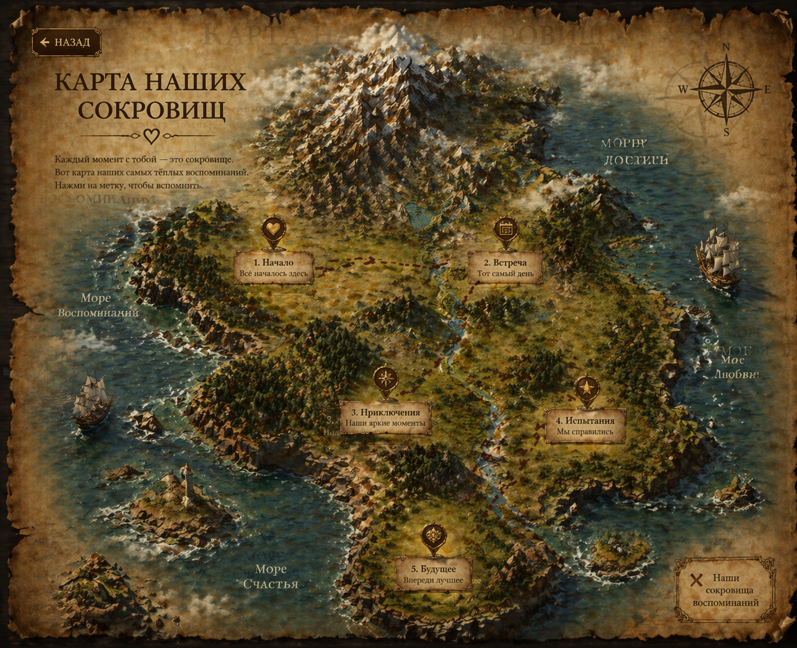

Показать маршрут
Сбросить анимацию
Клик по метке — открыть модальное окно

1. Начало
Всё началось здесь
2. Встреча
Тот самый день
3. Приключения
Наши яркие ��оменты
4. Испытания
Мы справились
5. Будущее
Впереди лучшее
Заголовок
Описание метки
Открыть внешнюю страницу
Закрыть